A handmade gift from little hands means more than anything store-bought ever could. These mother's day paper crafts are simple, sweet, and designed for real kids with real attention spans, which means no complicated steps, no special tools, and no stress for you either. Whether you sit down together at the kitchen table or set your child up independently, every project on this list will make Mom feel truly celebrated. 💐
What You'll Need
These basic supplies cover most of the mother's day paper crafts on this list, so one quick trip to the craft drawer is all it takes.
- Colored construction paper or cardstock, a variety pack in bright and pastel shades covers almost every project here.
- Colored tissue paper, great for the pom-pom bouquet and butterfly ideas on the list.
- Glue sticks, washable and easy for small hands to use without making a mess.
- Child-safe scissors, pointed-tip kids scissors work well for clean cuts on cardstock.
- Markers or crayons, for adding color, details, and personal messages.
- String or yarn, for garlands and mobiles.
20 Mother's Day Paper Craft Ideas
1. Paper Flower Card
This is one of those mother's day paper crafts that looks impressive but is surprisingly easy to pull off. Stack circles of different sizes cut from pink, red, and yellow paper, snip petals around the edges of each layer, and glue them together with a small circle center. Attach the finished flower to a folded card and let your child write a sweet message inside. Mom will want to keep this one forever.
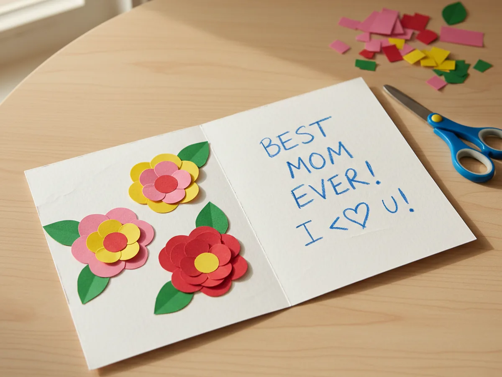
2. Paper Heart Garland
Cut hearts from pink, red, and purple construction paper, punch a small hole at the top of each one, and thread them onto a long piece of string or yarn. Hang it across Mom's bedroom window or above the kitchen table for a sweet surprise she can enjoy all week. Even the youngest crafters can tear paper hearts instead of cutting them for a fun, textured version. This garland looks beautiful and takes almost no time to make together.
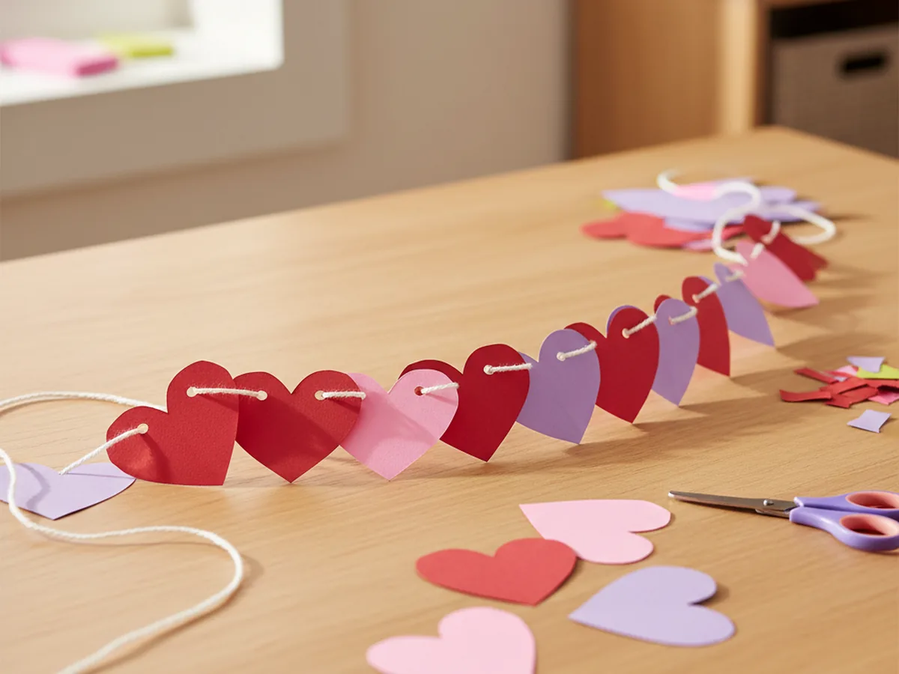
3. Paper Rose Bouquet
Roll a small square of red or pink paper into a loose cone shape, pinch the base to form a rose, and attach it to a green paper stem. Make five or seven together and bundle them up with a ribbon or paper band for a bouquet that looks almost real. This is one of the prettiest mother's day paper crafts on the list, and it lasts much longer than a real flower. Kids love the satisfying process of rolling and shaping each petal.
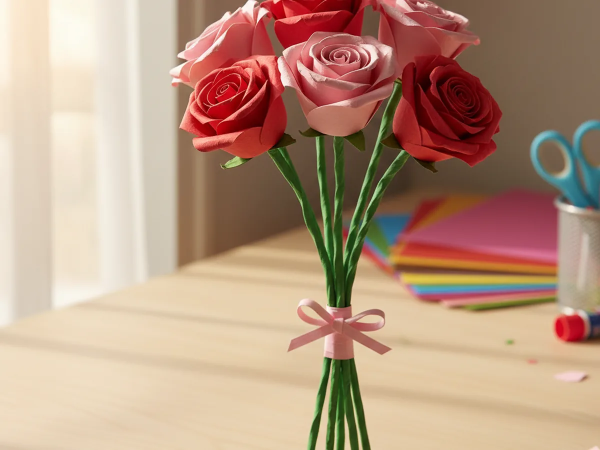
4. Paper Butterfly Mobile
Cut butterfly shapes from tissue paper or construction paper, let your child decorate each one with markers, and hang them from a small twig using pieces of string at different heights. It makes a whimsical spring mobile that Mom can hang near a window. This project is especially lovely because every butterfly looks a little different, which makes the whole thing feel truly one of a kind. 🦋
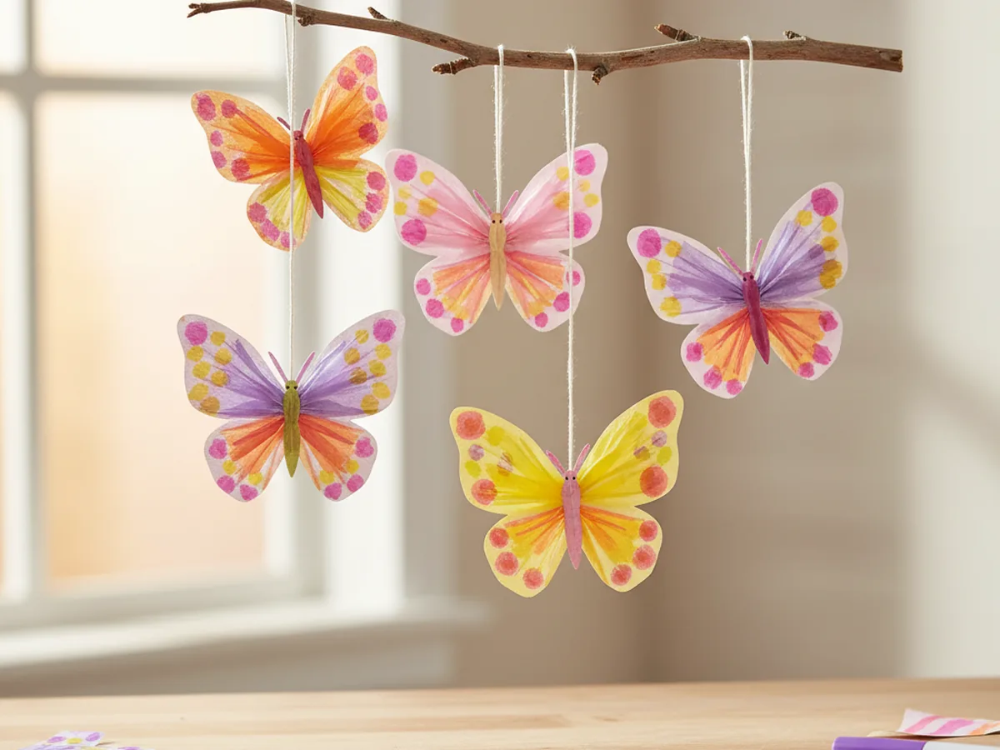
5. Paper Crown for Mom
Cut a strip of cardstock long enough to fit around Mom's head, cut points or scallops along the top edge, and let your child go wild decorating it with paper flowers, stickers, and the words "Best Mom" written in marker. This is one of those crafts that kids get completely absorbed in because the decorating feels so personal and joyful. Mom gets to wear it at breakfast and feel like the royalty she truly is.
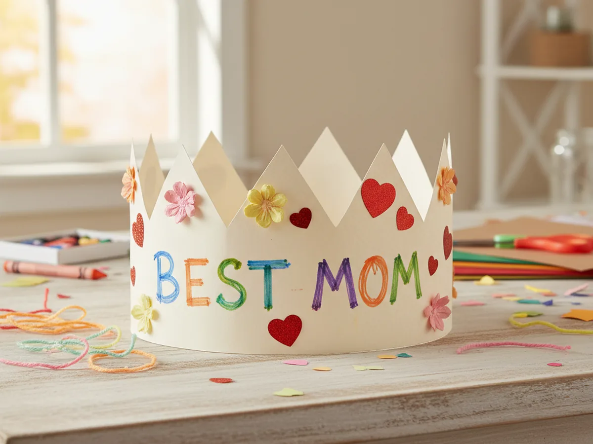
6. Paper Flower Bookmark
Cut a long rectangle from cardstock for the bookmark body, then glue a small layered paper flower to the top. Add a ribbon loop at the bottom if you want a little extra flair. This is a practical gift that Mom will actually use every day, which makes it feel extra thoughtful. Let your child sign the back and add a short message for a personal touch.
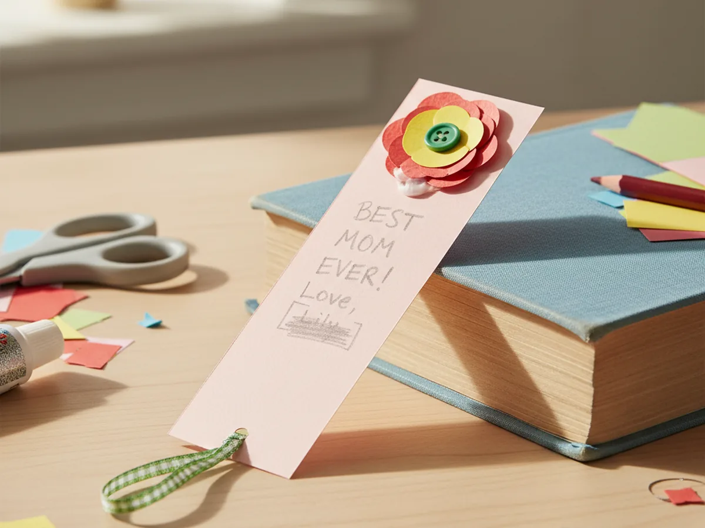
7. Paper Pop-Up Flower Card
Fold a piece of cardstock in half, cut a small slit along the fold near the center, push it inward to create a pop-up tab, and glue a paper flower to the front of the tab. When Mom opens the card, a flower pops up to greet her. It is one of those paper crafts for kids that looks far more impressive than it actually is to make, which is always a win. Older kids especially love the "magic" moment when the card opens.
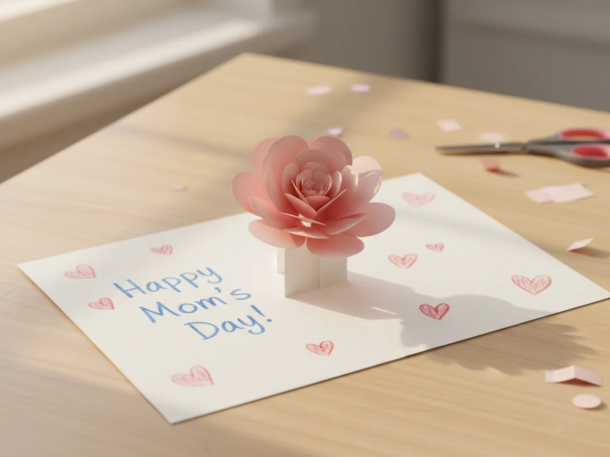
8. Paper Tulip Bouquet
Cut tulip shapes from colorful cardstock and attach each one to a long green paper stem. Bundle several together and wrap the base with a strip of paper or a ribbon for a sweet paper bouquet. Tulips are one of the easiest flower shapes for young kids to cut because the outline is simple and forgiving. Line them up in a cup or vase for a display that brightens up any kitchen counter.
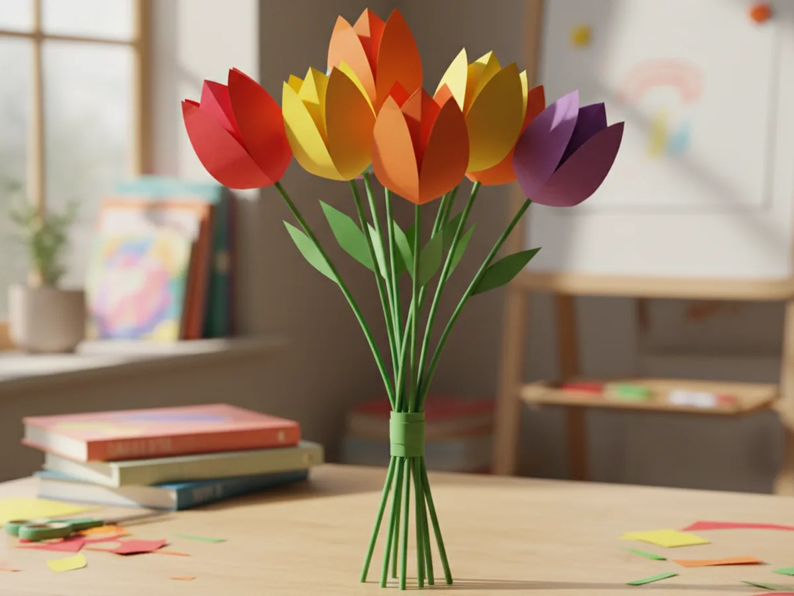
9. Accordion Paper Fan
Fold a long sheet of paper back and forth in even accordion pleats, pinch the bottom together, and secure it with tape or a rubber band to form a fan shape. Use rainbow construction paper or let your child draw a pattern on white paper before folding for a personalized look. It is a quick and satisfying craft that younger kids can do almost entirely on their own. Mom can actually use it, which makes it a gift as much as a piece of art.
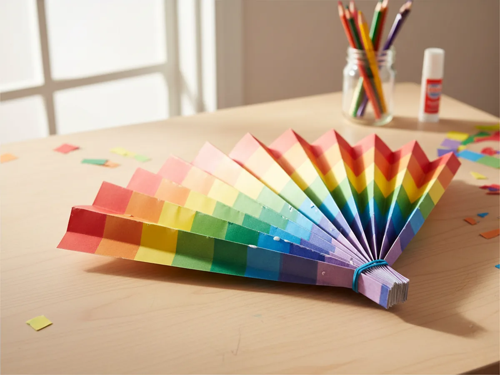
10. Paper Photo Frame
Cut a large rectangle from cardstock and cut out a smaller rectangle in the center for the photo window. Let your child decorate the frame with paper flowers, hearts, and stickers, then slip in a small printed photo of the two of you. This is the kind of gift that ends up on the fridge or the desk for years. The decorating process is open-ended and deeply fun for kids of all ages.
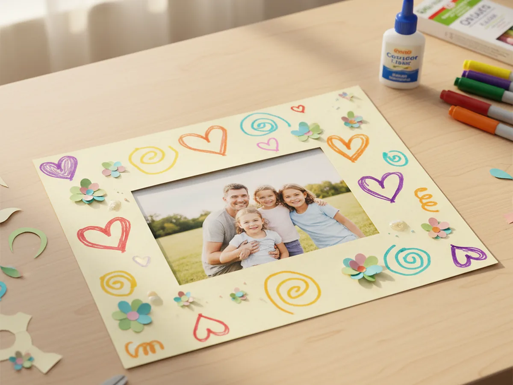
11. Paper Sunflower
Cut a large brown circle for the center, then cut long yellow petals and glue them all the way around the edge. Add a long green paper stem and a couple of leaves for a cheerful sunflower that stands out on any wall. Sunflowers are one of the most satisfying paper flowers to make because the finished result looks so bold and bright. Pre-cut the petals for younger kids so they can jump straight into assembling.
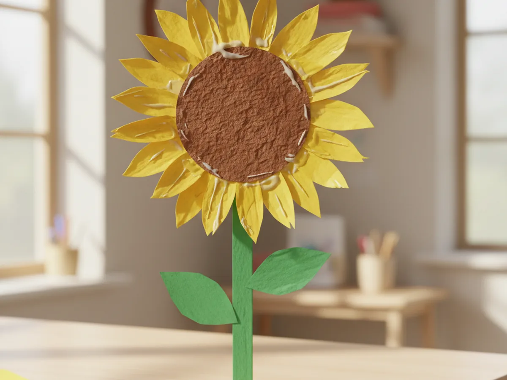
12. Tissue Paper Pom-Pom Bouquet
Stack several sheets of tissue paper, accordion-fold them together, pinch the center, and fan out both sides to create a full round pom-pom. Make a bunch in different colors and arrange them in a paper cup or small jar for a fluffy, festive bouquet. This is one of those mother's day paper crafts that even two-year-olds can help with since the scrunching and pulling feels so satisfying for tiny hands. The result is genuinely gorgeous.
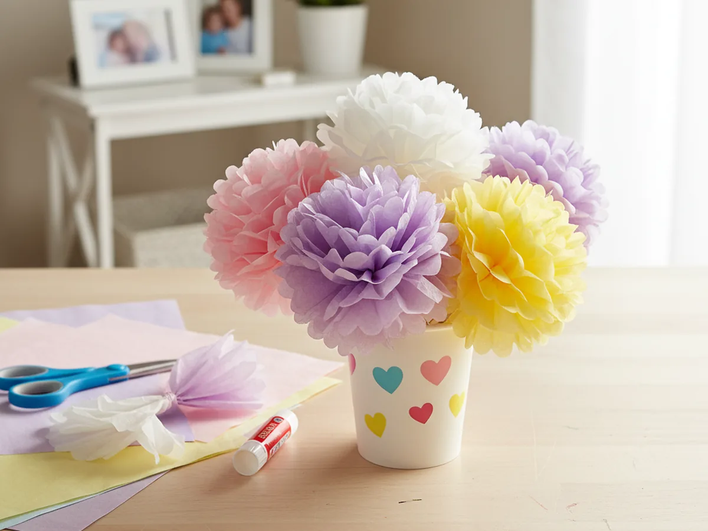
13. Paper Love Letter
Help your child fold a piece of paper into an envelope shape, then encourage them to draw pictures or write a short message inside before sealing it with a heart sticker. Even very young kids who cannot yet write can fill the paper with drawings, scribbles, or a handprint. A handwritten letter from a child is one of the most touching things a mom can receive. Slip in a dried flower or a sweet drawing for an extra special touch.
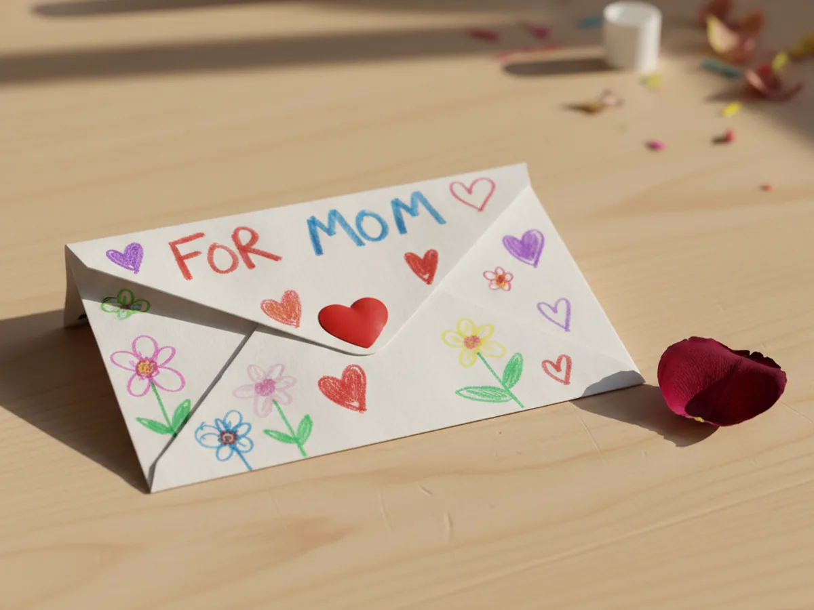
14. Paper Butterfly Card
Fold a large piece of cardstock in half so the fold runs down the center, then draw and cut a butterfly shape along the outer edges, making sure the body stays connected at the fold. When opened, the card looks like a butterfly with two wings spreading apart. Decorate the wings with dots, stripes, and flowers before writing a sweet note inside. It is a creative twist on a regular card that feels genuinely special.
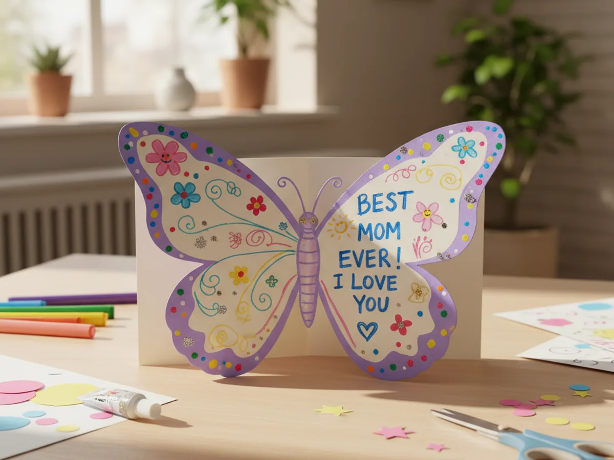
15. Paper Daisy Chain Garland
Accordion-fold a long strip of white paper, draw a simple daisy shape across the folded layers making sure the edges touch the fold, and cut it out. Open it up to reveal a repeating chain of connected daisies. Color each flower differently for a cheerful, rainbow garland. Younger kids can color and decorate the cut-out chain while an adult or older sibling does the folding and cutting.
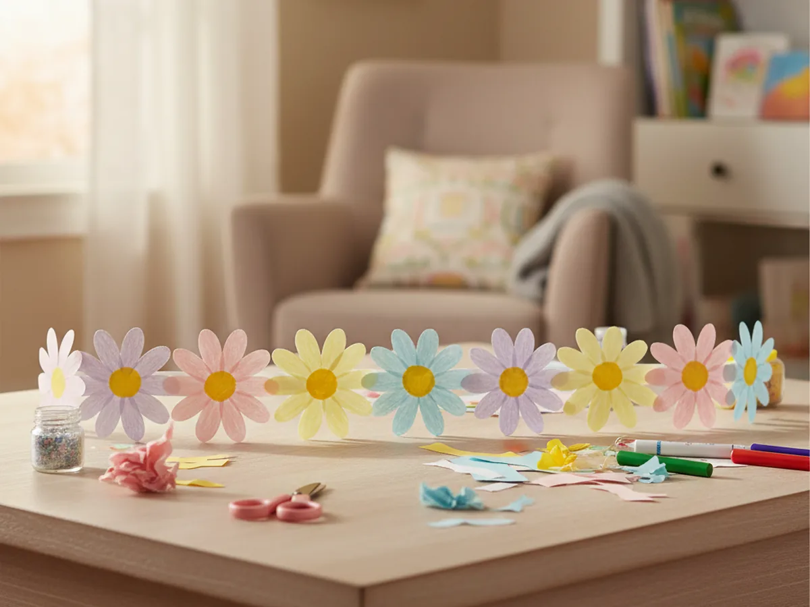
16. Paper Coupon Book for Mom
Stack several small rectangles of paper together and staple them at one side to create a mini booklet. Help your child fill each page with a sweet offer: a hug coupon, a breakfast-in-bed coupon, or a "help with dishes" coupon. Decorate the cover with flowers, hearts, and Mom's name. This is a perfect mother's day paper craft for kids who want to give something thoughtful and personal beyond just an object.
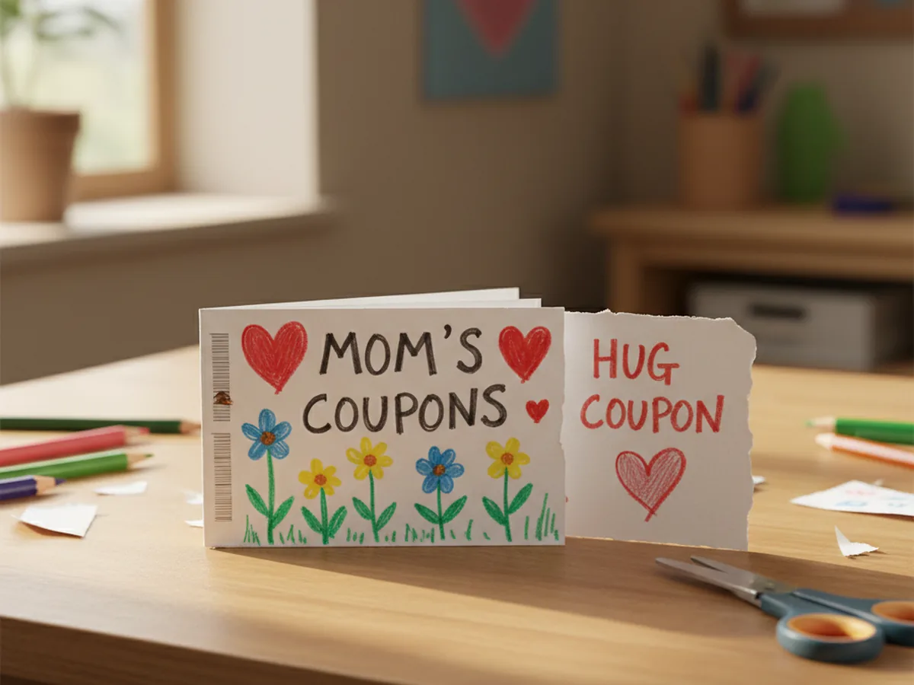
17. Paper Flower Wreath
Cut a large ring shape from cardstock (or use two paper plates stacked together with the centers cut out), then cover it in small paper flowers made from layered circles. Use several colors of paper for a vibrant, full-looking wreath. Hang it on the front door or Mom's bedroom door as a springtime welcome. Kids love the repetitive process of making lots of small flowers and watching the wreath fill up.
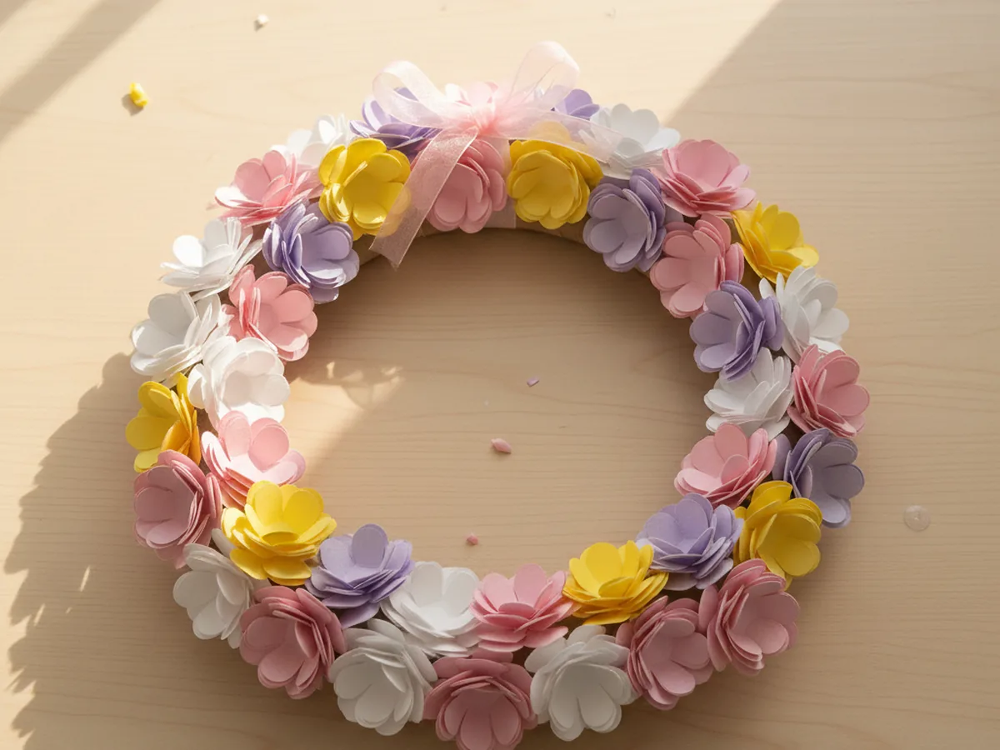
18. Paper Mosaic Heart
Draw or print a large heart outline on white paper, then have your child fill the entire shape with small squares of torn or cut colorful paper, glued down tightly together for a mosaic effect. The result is a vibrant, textured piece of art that looks beautiful framed on the wall. Tearing the paper is a great sensory activity for toddlers, while cutting small precise squares is a satisfying challenge for older kids.
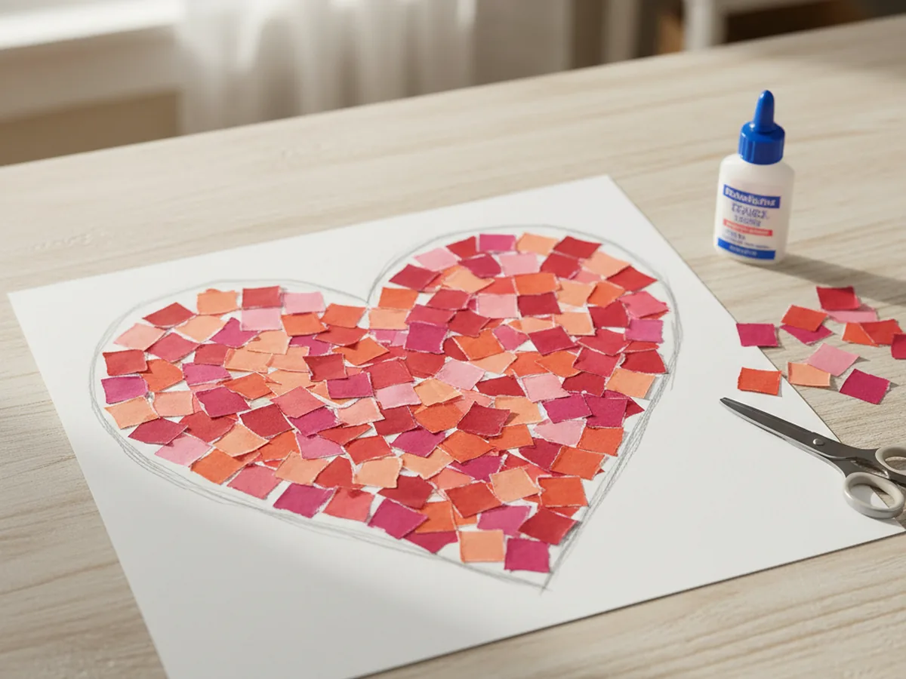
19. Paper Gift Box
Score and fold a single sheet of thick cardstock into a small three-dimensional box using a simple cross-shaped template. Let your child decorate the outside with flowers and hearts before assembling it, then use it to hold a small candy or a folded note inside. This craft teaches basic geometry in the most hands-on and satisfying way. Even a simple box feels luxurious when it is covered in your child's drawings.
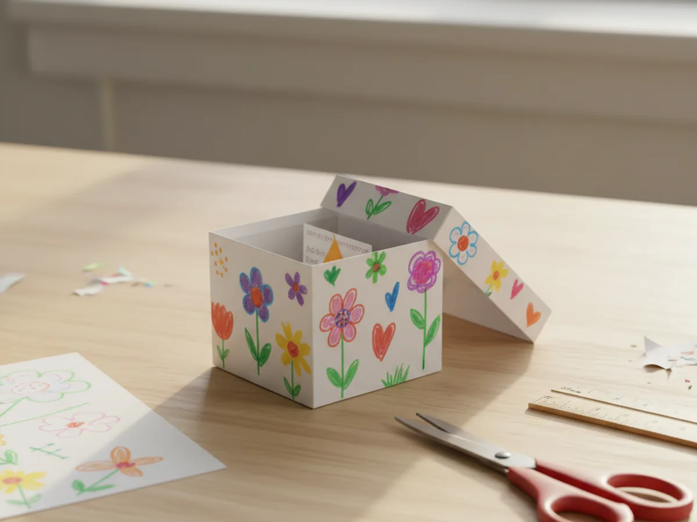
20. Paper Flower Vase
Cut a vase shape from cardstock and glue it at the bottom of a large piece of paper. Let your child fill the space above the vase with paper flowers, stems, and leaves to create a full flat bouquet displayed like a picture. Add a "For Mom" label at the bottom and you have a ready-to-frame piece of wall art. This is a wonderful open-ended project because every child's bouquet looks completely different.
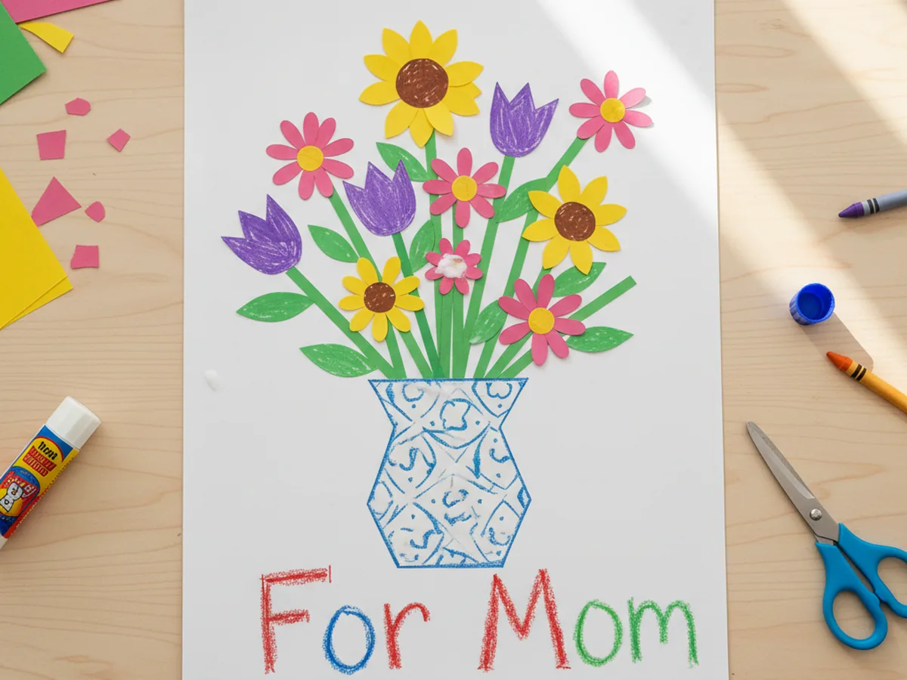
Final Thoughts
These mother's day paper crafts are proof that the sweetest gifts come from the heart, not the store. Every folded petal, every drawn message, and every bit of careful cutting is a small act of love that Mom will feel deeply. Pick one idea that fits your child's age and run with it, or spend a whole afternoon working through a few together. Either way, you will end up with something far more precious than anything wrapped in a box. Happy crafting, mama, and enjoy every wonderful moment of it. ❤️
More Crafts You'll Love
If you and your little one enjoyed these ideas, you will love these simple projects too. 🌸
A little paper and a lot of love go a very long way.